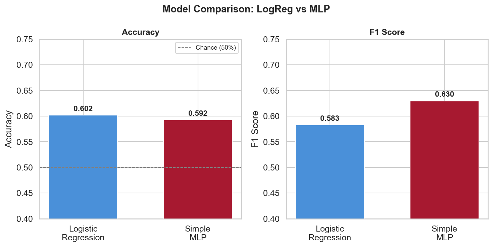
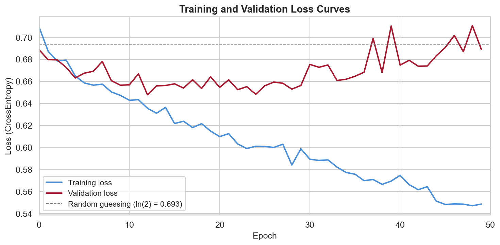
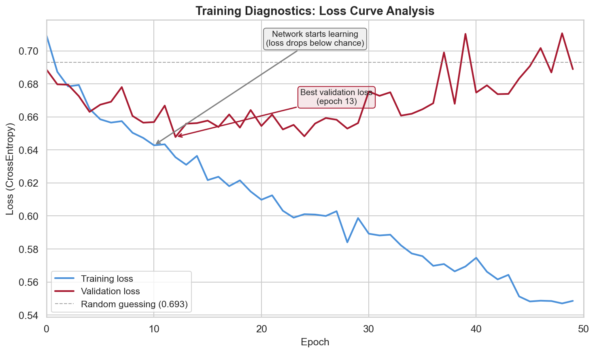
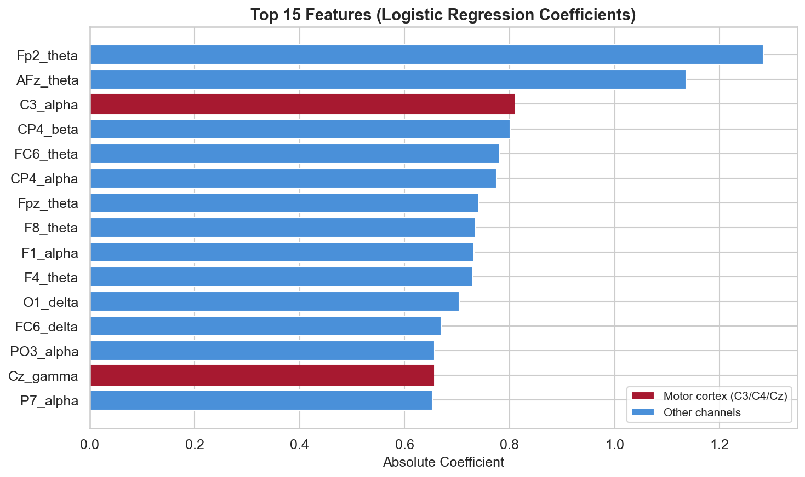
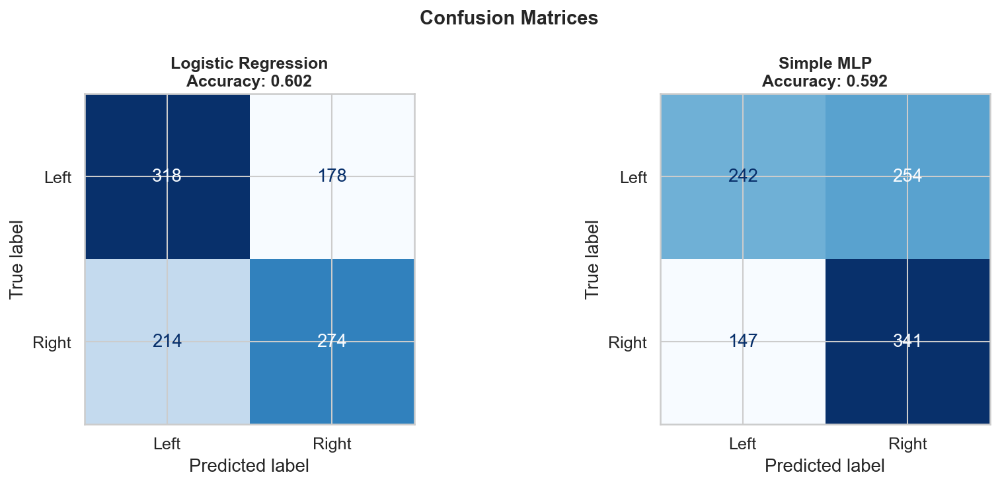

PSYC4411 Week 10 Challenge Lab
Example Group — Week 10

Accuracy and F1 for LogReg vs MLP (4,918 trials, 320 features)

Training and validation loss — both decrease below chance (0.693) but converge near the same value

Annotated loss diagnostics — the network learns but can’t beat the linear model

Top 15 features by LogReg coefficient — motor cortex channels highlighted in red

Confusion matrices — both models show similar patterns of errors
Logistic Regression achieved 60.2% accuracy and F1 0.583 on 320 EEG features. This is a meaningful result for BCI motor imagery — chance is 50%, and 60% is typical in the literature for cross-subject classification.
Training loss decreased below 0.693 (the ln(2) random-guessing threshold), confirming the network learned something. Validation loss tracked closely, showing minimal overfitting with dropout at 0.3. But the improvement was marginal — the signal is genuinely weak.
No. The MLP matched but did not beat logistic regression. LogReg: ~5 lines of code. MLP: ~30 lines, a new framework, tensor conversions, training loops, and harder debugging. For pre-extracted tabular features with weak signal, the added complexity was not justified.
Neural networks shine when they can learn representations from raw data (images, text, raw EEG waveforms). Here, we gave both models the same hand-crafted features — so the MLP had no advantage. The lesson: more complex ≠ more accurate.
A 60% accurate BCI means 4 in 10 commands are wrong. Before deployment, BCI systems need personalised calibration (per-subject training), clear uncertainty feedback, and testing across diverse populations. A “mind-reading” system that’s wrong 40% of the time could cause real harm.